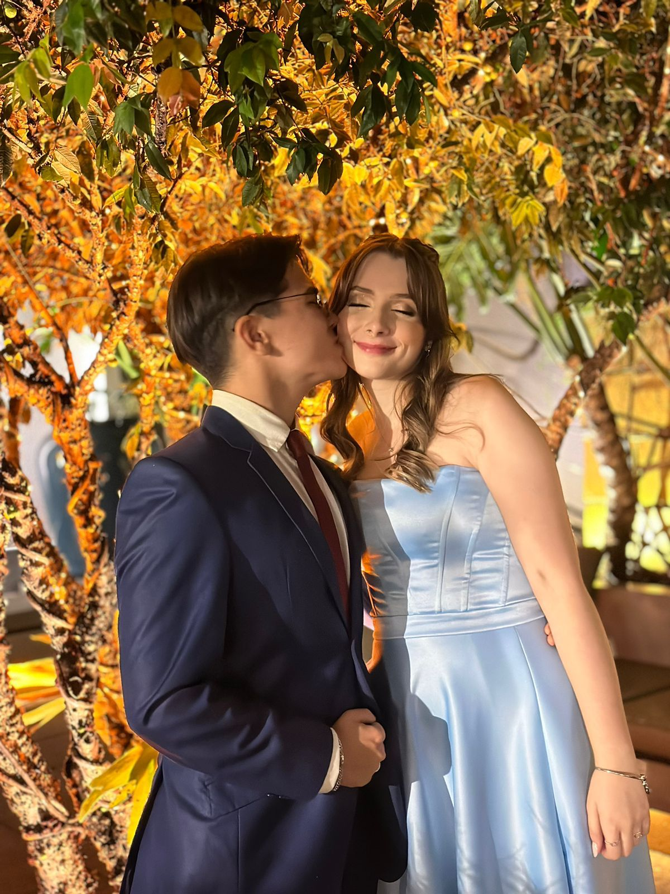

Meu primeiro e mais importante site.
Este site é dedicado especialmente ao amor da minha vida, Beatriz Martelli Gomes.
Com muito amor, Samuel Ueno Fernandes.

"Cada minuto é aquilo que nele se viveu, se sentiu ou se pensou, não é um tempo que vai sempre rumo ao futuro, mas um tempo que pode retornar ao passado já vivido pela memória e encontrar aí significado para o presente."
-Marcel Proust.